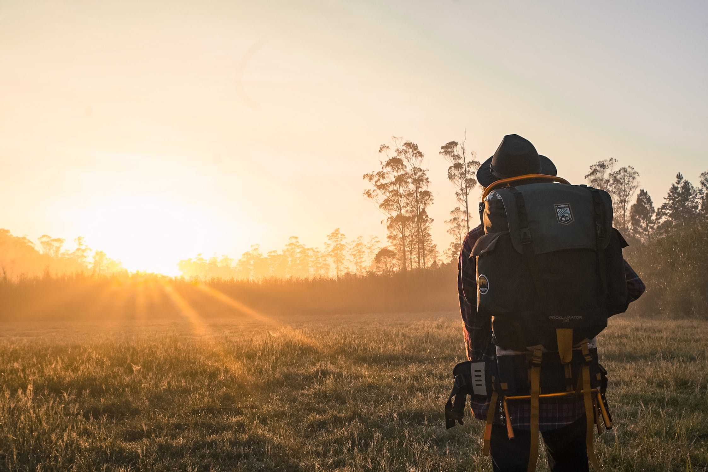

Preston Idaho

5 Day Forecast
| Wed | Thu | Fri | Sat | Sun |
|---|---|---|---|---|
 89 °F 89 °F |
87 °F |
78 °F |
75 °F |
72 °F |
Articles
Founder Day Freco
Denise Rebollo
I was recently reflecting upon the founders say event held at Foundations Park each year. I have been taking the destival for granted and have not been properly engaging in prehaps the most popular community event of the year.  In response, I contacted Ms.Sharon via email and expressed my desire to serve on teh event committee. Well, you guessed it, the phone rings and almost immediately and she promptly asks me to be the event committee chair. Literally, good grielf! My apperciation for the years of dedicated, generous service of volunteers and sponsors has escalated beyoung whatI though I could feel for such a thing and ...continue to full artice